Nginx 架构
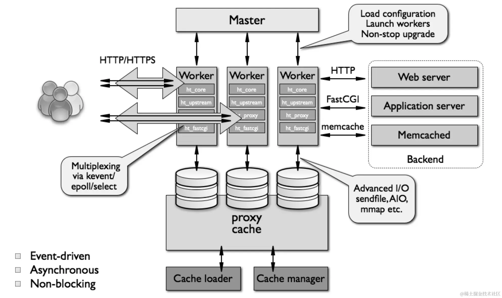
从上边这张图，我们可以一览nginx的架构设计，首先我们可以直观得出nginx的几大特点：
- 事件驱动&异步非阻塞
- 多进程机制
- 服务端缓存
- 反向代理
Nginx模块
- 核心模块 ：是nginx 服务器正常运行必不可少的模块，提供错误日志记录、配置文件解析、事件驱动
机制、进程管理等核心功能
- 标准HTTP模块 ：提供 HTTP 协议解析相关的功能，如：端口配置、网页编码设置、HTTP 响应头设
置等
- 可选HTTP模块 ：主要用于扩展标准的 HTTP 功能，让nginx能处理一些特殊的服务，如：Flash 多
媒体传输、解析 GeoIP 请求、SSL 支持等
- 邮件服务模块 ：主要用于支持 nginx 的邮件服务，包括对 POP3 协议、IMAP 协议和 SMTP 协议的支持
- 第三方模块 ：是为了扩展 Nginx 服务器应用，完成开发者自定义功能，如：Json 支持、Lua 支持等
nginx目录一览
1
2
3
4
5
6
7
8
9
10
11
12
13
14
15
16
17
18
19
20
21
22
23
24
25
| [root@localhost /]# tree /usr/local/nginx/ -L 2
/usr/local/nginx/
├── conf #存放一系列配置文件的目录
│ ├── fastcgi.conf #fastcgi程序相关配置文件
│ ├── fastcgi.conf.default #fastcgi程序相关配置文件备份
│ ├── fastcgi_params #fastcgi程序参数文件
│ ├── fastcgi_params.default #fastcgi程序参数文件备份
│ ├── koi-utf #编码映射文件
│ ├── koi-win #编码映射文件
│ ├── mime.types #媒体类型控制文件
│ ├── mime.types.default #媒体类型控制文件备份
│ ├── nginx.conf #主配置文件
│ ├── nginx.conf.default #主配置文件备份
│ ├── scgi_params #scgi程序相关配置文件
│ ├── scgi_params.default #scgi程序相关配置文件备份
│ ├── uwsgi_params #uwsgi程序相关配置文件
│ ├── uwsgi_params.default #uwsgi程序相关配置文件备份
│ └── win-utf #编码映射文件
├── html #存放网页文档
│ ├── 50x.html #错误页码显示网页文件
│ └── index.html #网页的首页文件
├── logs #存放nginx的日志文件
├── sbin #存放启动程序
│ ├── nginx #nginx启动程序
│ └── nginx.old
|
nginx.conf文件 解读
首先我们要知道nginx.conf文件是由一个一个的指令块组成的，nginx用{}标识一个指令块，指令块中再设置具体的指令(注意指令必须以;号结尾)。
指令块有：
- 全局模块
- events模块
- http模块
- server模块
- location模块
- upstream模块
精简后的结构如下：
1
2
3
4
5
6
7
8
9
10
11
12
13
14
| 全局模块
event模块
http模块
upstream模块
server模块
location块
location块
....
server模块
location块
location块
...
....
|
各模块的功能作用如下描述：
- 全局模块： 配置影响nginx全局的指令，比如运行nginx的用户名，nginx进程pid存放路径，日志存放路径，配置文件引入，worker进程数等。
- events块： 配置影响nginx服务器或与用户的网络连接。比如每个进程的最大连接数，选取哪种事件驱动模型（select/poll epoll或者是其他等等nginx支持的）来处理连接请求，是否允许同时接受多个网路连接，开启多个网络连接序列化等。
- http块： 可以嵌套多个server，配置代理，缓存，日志格式定义等绝大多数功能和第三方模块的配置。如文件引入，mime-type定义，日志自定义，是否使用sendfile传输文件，连接超时时间，单连接请求数等。
- upstream块： 配置上游服务器的地址以及负载均衡策略和重试策略等等。
- server块： 配置虚拟主机的相关参数比如域名端口等等，一个http中可以有多个server。
- location块： 配置url路由规则。
下面看下nginx.conf长啥样并对一些指令做个解释：
1
2
3
4
5
6
7
8
9
10
11
12
13
14
15
16
17
18
19
20
21
22
23
24
25
26
27
28
29
30
31
32
33
34
35
36
37
38
39
40
41
42
43
44
45
46
47
48
49
50
51
52
53
54
55
56
57
58
59
60
61
62
63
64
65
66
67
68
69
70
71
72
73
74
75
76
77
78
79
80
81
82
83
84
85
86
87
88
89
90
91
92
| # 注意：有些指令是可以在不同指令块使用的（需要时可以去官网看看对应指令的作用域）。这里只是演示
[root@localhost /usr/local/nginx]# cat /usr/local/nginx/conf/nginx.conf
#user nobody;
worker_processes 1; # 指定工作进程的个数，默认是1个。具体可以根据服务器cpu数量进行设置， 比如cpu有4个，可以设置为4。如果不知道cpu的数量，可以设置为auto。 nginx会自动判断服务器的cpu个数，并设置相应的进程数
#error_log logs/error.log;
#error_log logs/error.log notice;
#error_log logs/error.log info;
#pid logs/nginx.pid;
events {
accept_mutex on; # 设置网路连接序列化，防止惊群现象发生，默认为on
# Nginx支持的工作模式有select、poll、kqueue、epoll、rtsig和/dev/poll，其中select和poll都是标准的工作模式，kqueue和epoll是高效的工作模式，不同的是epoll用在Linux平台上，而kqueue用在BSD系统中，对于Linux系统，epoll工作模式是首选
use epoll;
# 用于定义Nginx每个工作进程的最大连接数，默认是1024。最大客户端连接数由worker_processes和worker_connections决定，即Max_client=worker_processes*worker_connections在作为反向代理时，max_clients变为：max_clients = worker_processes *worker_connections/4。进程的最大连接数受Linux系统进程的最大打开文件数限制，在执行操作系统命令“ulimit -n 65536”后worker_connections的设置才能生效
worker_connections 1024;
}
# 对HTTP服务器相关属性的配置如下
http {
include mime.types; # 引入文件类型映射文件
default_type application/octet-stream; # 如果没有找到指定的文件类型映射 使用默认配置
# 设置日志打印格式
#log_format main '$remote_addr - $remote_user [$time_local] "$request" '
# '$status $body_bytes_sent "$http_referer" '
# '"$http_user_agent" "$http_x_forwarded_for"';
#
#access_log logs/access.log main; # 设置日志输出路径以及 日志级别
sendfile on; # 开启零拷贝 省去了内核到用户态的两次copy故在文件传输时性能会有很大提升
#tcp_nopush on; # 数据包会累计到一定大小之后才会发送，减小了额外开销，提高网络效率
keepalive_timeout 65; # 设置nginx服务器与客户端会话的超时时间。超过这个时间之后服务器会关闭该连接，客户端再次发起请求，则需要再次进行三次握手。
#gzip on; # 开启压缩功能，减少文件传输大小，节省带宽。
sendfile_max_chunk 100k; #每个进程每次调用传输数量不能大于设定的值，默认为0，即不设上限。
# 配置你的上游服务（即被nginx代理的后端服务）的ip和端口/域名
upstream backend_server {
server 172.30.128.65:8080;
server 172.30.128.65:8081 backup; #备机
}
server {
listen 80; #nginx服务器监听的端口
server_name localhost; #监听的地址 nginx服务器域名/ip 多个使用英文逗号分割
#access_log logs/host.access.log main; # 设置日志输出路径以及 级别，会覆盖http指令块的access_log配置
# location用于定义请求匹配规则。 以下是实际使用中常见的3中配置（即分为：首页，静态，动态三种）
# 第一种：直接匹配网站根目录，通过域名访问网站首页比较频繁，使用这个会加速处理，一般这个规则配成网站首页，假设此时我们的网站首页文件就是： usr/local/nginx/html/index.html
location = / {
root html; # 静态资源文件的根目录 比如我的是 /usr/local/nginx/html/
index index.html index.htm; # 静态资源文件名称 比如：网站首页html文件
}
# 第二种：静态资源匹配（静态文件修改少访问频繁，可以直接放到nginx或者统一放到文件服务器，减少后端服务的压力），假设把静态文件我们这里放到了 usr/local/nginx/webroot/static/目录下
location ^~ /static/ {
alias /webroot/static/; #访问 ip:80/static/xxx.jpg后，将会去获取/url/local/nginx/webroot/static/xxx.jpg 文件并响应
}
# 第二种的另外一种方式：拦截所有 后缀名是gif,jpg,jpeg,png,css.js,ico这些 类静态的的请求，让他们都去直接访问静态文件目录即可
location ~* \.(gif|jpg|jpeg|png|css|js|ico)$ {
root /webroot/static/;
}
# 第三种：用来拦截非首页、非静态资源的动态数据请求，并转发到后端应用服务器
location / {
proxy_pass http://backend_server; #请求转向 upstream是backend_server 指令块所定义的服务器列表
deny 192.168.3.29; #拒绝的ip （黑名单）
allow 192.168.5.10; #允许的ip（白名单）
}
# 定义错误返回的页面，凡是状态码是 500 502 503 504 总之50开头的都会返回这个 根目录下html文件夹下的50x.html文件内容
error_page 500 502 503 504 /50x.html;
location = /50x.html {
root html;
}
}
# 其余的server配置 ,如果有需要的话
#server {
......
# location / {
....
# }
#}
# include /etc/nginx/conf.d/*.conf; # 一般我们实际使用中有很多配置，通常的做法并不是将其直接写到nginx.conf文件，
# 而是写到新文件 然后使用include指令 将其引入到nginx.conf即可，这样使得主配置nginx.conf文件更加清晰。
}
|
以上就是nginx.conf文件的配置了，主要讲了一些指令的含义，当然实际的指令有很多，我在配置文件并没有全部写出来，准备放到后边章节详细阐述这些东西，比如：location匹配规则，反向代理，动静分离，负载均衡策略，重试策略，压缩，https,限流，缓存，跨域这些 我们都没细说，这些东西比较多比较细不可能把使用规则和细节都写到上边的配置文件中，所以我们下边一一解释说明关于这些东西的配置和使用方式。
另外值的注意的是： 因为有些指令是可以在不同作用域使用的，如果在多个作用域都有相同指令的使用，那么nginx将会遵循就近原则或者我愿称之为 内层配置优先。 eg: 你在 http配了日志级别，也在某个server中配了日志级别，那么这个server将使用他自己配置的已不使用外层的http日志配置。
反向代理
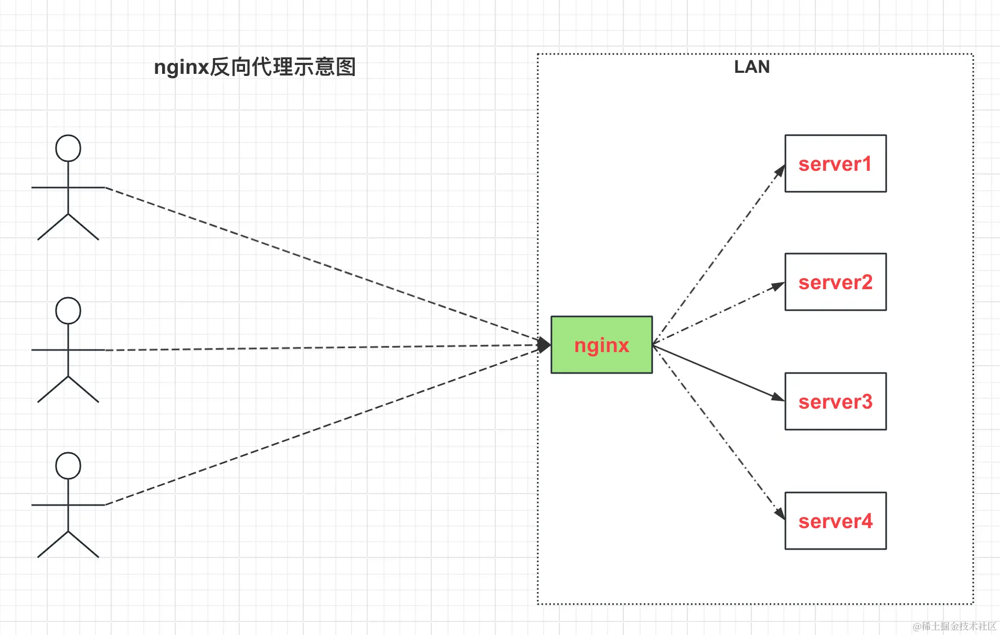
要让 nginx 代理 我们的 服务 很简单，简单描述一下就是 两步：
通过upstream指令块来定义我们的上游服务（即被代理的服务）
通过location指令块中的 proxy_pass指令，指定该location要路由到哪个upstream
配置好1和2后，如果来了请求后 会通过url路由到对应的location, 然后nginx会将请求打到upstream定义的服务地址中去。
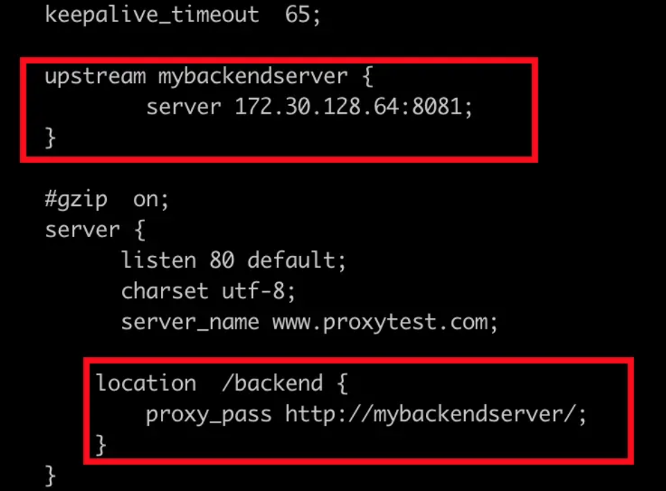
注意上边的 proxy_pass http://mybackendserver/ 后边这个斜线加和不加区别挺大的，加的话不会拼接/backend , 而不加的话会拼接 /backend
消除 proxy_pass 转发 /的恐怖阴影
在配置Nginx过程中路由转发的一个小小 / 可能会给你带来很多麻烦，虽然只是一个小小的斜杠，但是转发的结果千差万别
- proxy_pass 不带/
1
2
3
4
5
6
| location /alpha/ {
proxy_pass http://192.168.xxx.xxx:80;
}
http://domain/alpha/ --> http://192.168.xxx.xxx:80/alpha/
http://domain/alpha/beta/abc --> http://192.168.xxx.xxx:80/alpha/beta/abc
|
- proxy_pass 带/
1
2
3
4
5
6
| location /alpha/ {
proxy_pass http://192.168.xxx.xxx:80/;
}
http://domain/alpha/ --> http://192.168.xxx.xxx:80/
http://domain/alpha/beta/abc --> http://192.168.xxx.xxx:80/beta/abc
|
反向代理流程与原理
对于上边演示的反向代理案例的流程与原理，我们来个示意图如下
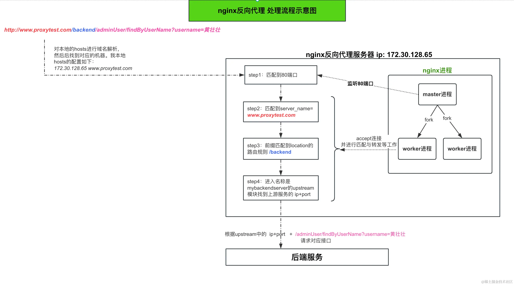
负载均衡
说到负载均衡很多人应该并不陌生，总而言之负载均衡就是：避免高并发高流量时请求都聚集到某一个服务或者某几个服务上，而是让其均匀分配（或者能者多劳），从而减少高并发带来的系统压力，从而让服务更稳定。对于nginx来说，负载均衡就是从 upstream 模块定义的后端服务器列表中按照配置的负载策略选取一台服务器接受用户的请求。
nginx常用的负载策略
- 轮询(默认方式)
- 每个请求会按时间顺序逐一分配到不同的后端服务器
- 在轮询中，如果服务器down掉了，会自动剔除该服务器
- 缺省配置就是轮询策略
- 此策略适合服务器配置相当，无状态且短平快的服务使用
- weight(权重方式)
- 在轮询策略的基础上指定轮询的几率
- 权重越高分配到的请求越多
- 此策略可以与least_conn和ip_hash结合使用
- 此策略比较适合服务器的硬件配置差别比较大的情况
- ip_hash(依据ip的hash值来分配)
- 在nginx版本1.3.1之前，不能在ip_hash中使用权重（weight）
- ip_hash不能与backup同时使用
- 此策略适合有状态服务，比如session
- 当有服务器需要剔除，必须手动down掉
- least_conn(最少连接方式)
- 此负载均衡策略适合请求处理时间长短不一造成服务器过载的情况
- fair(响应时间方式)
- 根据后端服务器的响应时间来分配请求，响应时间短的优先分配
- Nginx本身不支持fair，如果需要这种调度算法，则必须安装upstream_fair模块
- url_hash(依据URL分配方式)
- 按访问的URL的哈希结果来分配请求，使每个URL定向到一台后端服务器
- Nginx本身不支持url_hash，如果需要这种调度算法，则必须安装Nginx的hash软件包
轮询
轮询策略是默认的，所以只需要如下这样修改配置文件就可以了
1
2
3
4
5
6
| upstream backend_server {
ip_hash
server 172.30.128.65:8080;
server 172.30.128.65:8081;
server 172.30.128.65:8082;
}
|
weight
weight指令用于指定轮询机率，weight的默认值为1，weight的数值与访问比率成正比。 接下来我们指定8082端口的服务的weight=2，如下：
1
2
3
4
5
6
| upstream backend_server {
ip_hash
server 172.30.128.65:8080;
server 172.30.128.65:8081;
server 172.30.128.65:8082 weight=2;
}
|
ip_hash
设定ip哈希很简单，就是在你的upstream中 指定 ip_hash;即可，如下：
1
2
3
4
5
6
| upstream backend_server {
ip_hash;
server 172.30.128.65:8080;
server 172.30.128.65:8081;
server 172.30.128.65:8083;
}
|
least_conn
同ip_hash一样，设定最小连接数策略也很简单，就是在你的upstream中 指定 least_conn;即可，如下：
1
2
3
4
5
6
| upstream backend_server {
least_conn;
server 172.30.128.65:8080;
server 172.30.128.65:8081;
server 172.30.128.65:8083;
}
|
动静分离
如果将静态资源都搞到后端服务的话，将会提高后端服务的压力且占用带宽增加了系统负载（要知道，静态资源的访问频率其实蛮高的）所以为了避免该类问题我们可以把不常修改的静态资源文件放到nginx的静态资源目录中去，这样在访问静态资源时直接读取nginx服务器本地文件目录之后返回，这样就大大减少了后端服务的压力同时也加快了静态资源的访问速度，何为静，何为动呢？：
- 静：将不常修改且访问频繁的静态文件，放到nginx本地静态目录（当然也可以搞个静态资源服务器专门存放所有静态文件）
- 动：将变动频繁/实时性较高的比如后端接口，实时转发到对应的后台服务
接下来我们将构造一个html页面，然后点击按钮后发送get请求到后端接口。流程如下：
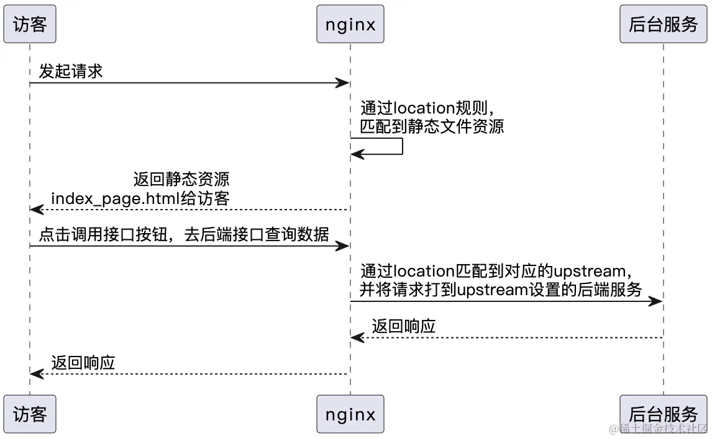
首先我们搞个html,内容如下：
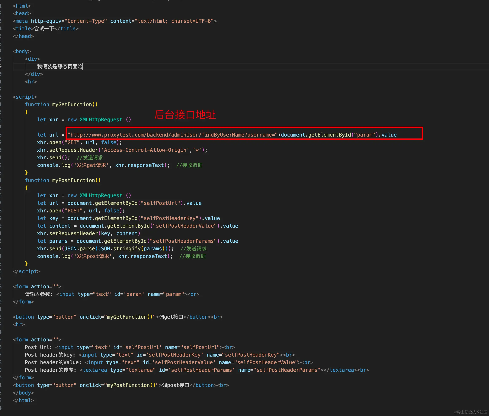
命令将index_page.html 文件上传到虚拟机。
1
| scp /Users/hzz/fsdownload/index_page.html root@172.30.128.65:/usr/local/nginx/test/static
|
修改nginx.conf文件
首先我们配置俩location规则,一个（ /frontend ）是读取静态文件，一个（/backend）是转发到 我们配置的upstream服务中去。如下：
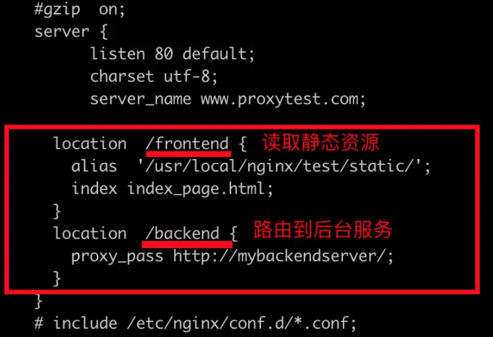
首先我们在浏览器输入：www.xxx.com/frontend/ ，可以看到请求返回了一个html页面，其实就是我们刚才的 /usr/local/nginx/test/static/index_page.html文件
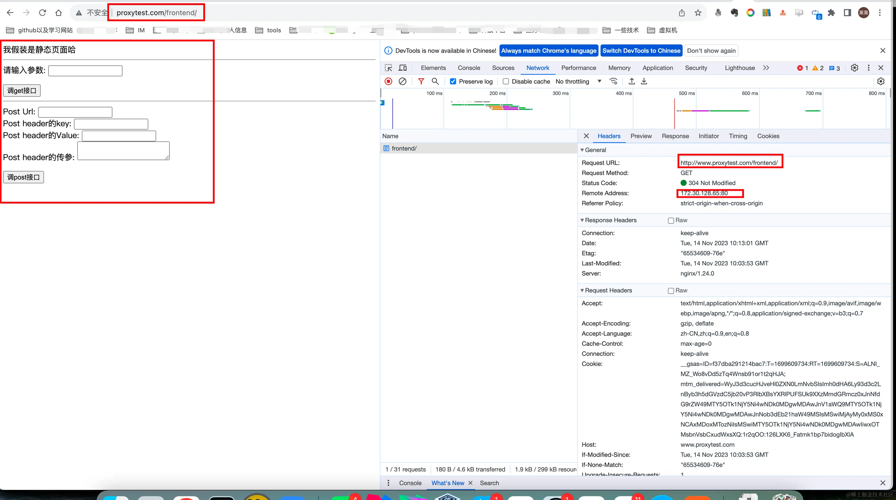
接着我们输入要查询的人名，之后点击 “调用get接口” 按钮，如下：
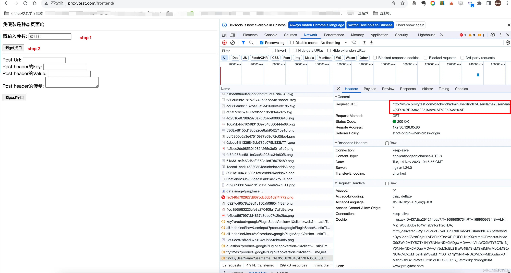
返回数据：
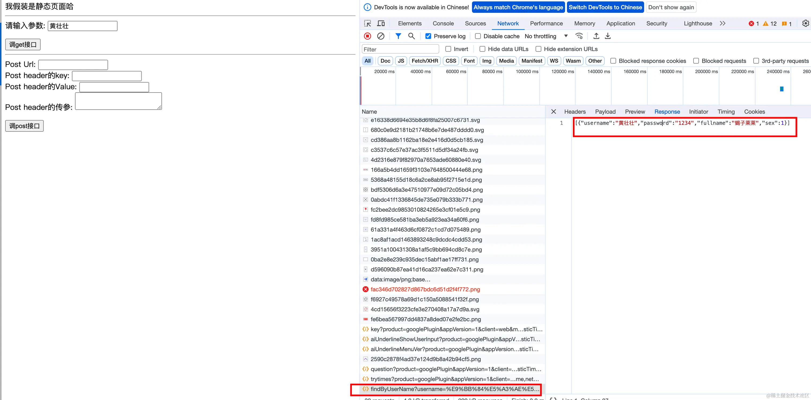
跨域
产生跨域问题的主要原因就在于同源策略，为了保证用户信息安全，防止恶意网站窃取数据，同源策略是必须的，该政策由 Netscape 公司于1995年引入浏览器。目前，所有浏览器都实行这个政策。同源策略主要是指三点相同即：协议+域名+端口 相同的两个请求，则可以被看做是同源的，但如果其中任意一点存在不同，则代表是两个不同源的请求，同源策略会限制不同源之间的资源交互从而减少数据安全问题。
首先我在nginx.conf文件中加一个server配置也即将前后端配成不同的server 并且监听的端口以及域名名称都不一致，从而造成访问前端服务和后端服务时候 这俩服务不是”同源”， 如下：
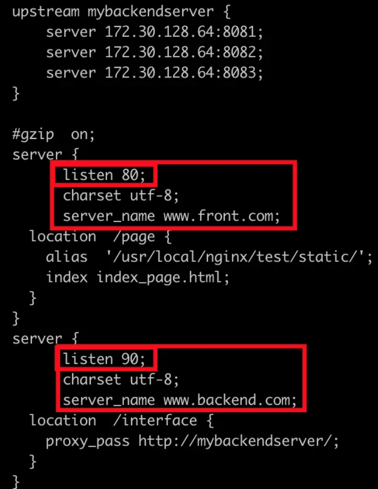
之后我修改index_page中的后端地址：
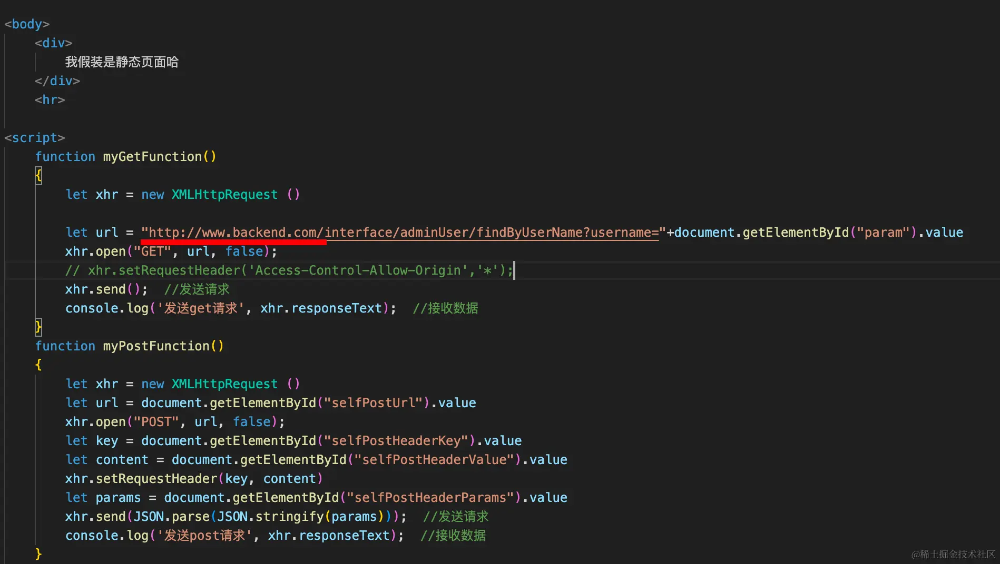
之后在浏览器中测试一下：
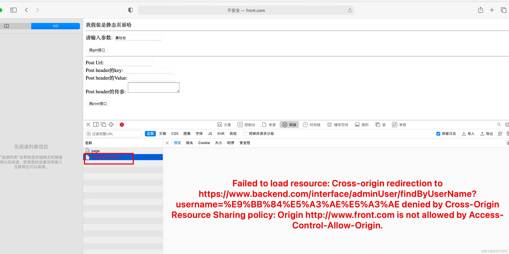
可以看到浏览器提示我们受同源规则影响我们不能跨域访问资源。造成的原因是我的两个域名解析出来的端口不一致 一个是80一个是90。不符合同源策略，所以必然会有跨域报错。
nginx解决跨域
首先想解决跨越就得避免不同源，而我们可不可以 把对后端的代理 放在前端的server中呢（也就是说让前后端统一使用一个端口，一个server_name）？答案是可以的，因为server支持多个location配置呀（一个location处理前端，一个location转发后端），我们改下配置文件试一把如下：
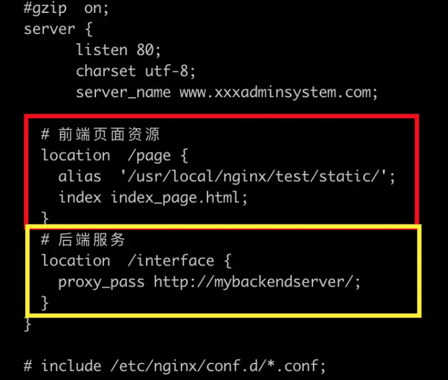
之后重启nginx后在浏览器输入 www.xxxadminsystem.com/page/ ，效果如下：
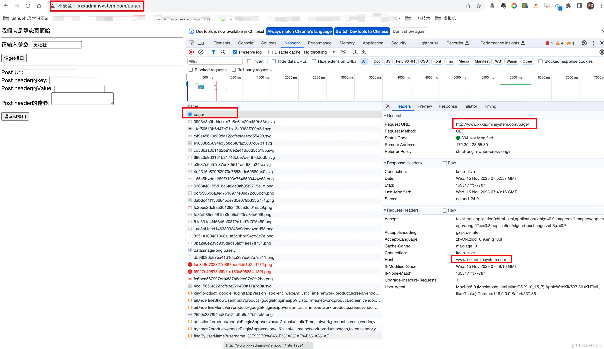
上边/page请求返回了html页面之后我们输入参数点击“调用get接口”查看到后端接口的调用如下：
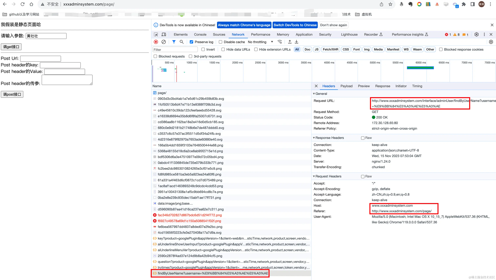
缓存
在开头我们就介绍过，nginx代理缓存可以在某些场景下有效的减少服务器压力，让请求快速响应，从而提升用户体验和服务性能，那么nginx缓存如何使用呢？在使用及演示前我们先来熟悉下相关的配置以及其含义，知道了这些才能更好的使用nginx缓存。
nginx缓存配置参数表格一览
- proxy_cache：设置是否开启对后端响应的缓存。
- 语法：proxy_cache zone | off;
- 默认配置：proxy_cache off;
- 示例：proxy_cache mycache; # 规定开启nginx缓存并且缓存名称为: mycache
- 作用域：http, server, location
- proxy_cache_valid：配置什么状态码可以被缓存，以及缓存时长
- 语法：proxy_cache_valid [code …] time;
- 示例：proxy_cache_valid 200 304 2m; # 对于状态为200和304的缓存文件，缓存时间是2分钟
- 作用域：http, server, location
- proxy_cache_key：设置缓存文件的 key
- 语法：proxy_cache_key string;
- 默认配置：proxy_cache_key：$scheme $proxy_host $request_uri;
- 示例：proxy_cache_key “$host $request_uri $cookie_user”; # 使用host +请求的uri以及cookie拼接成缓存key
- 作用域：http, server, location
事实上，ngx_http_proxy_module模块中代理缓存proxy_cache相关的指令远不止这些，如果有需要请参考： nginx官方文档。https://nginx.org/en/docs/http/ngx_http_proxy_module.html?_ga=2.13518455.1300709501.1700036543-1660479828.1698914648#proxy_cache
nginx缓存使用
接下来我们修改下nginx.conf文件,如下：
1
2
3
4
5
6
7
8
9
10
11
12
13
14
15
16
17
18
19
20
21
22
23
24
25
26
27
28
29
30
31
32
33
34
| http{
...
# 指定缓存存放目录为/usr/local/nginx/test/nginx_cache_storage，并设置缓存名称为mycache，大小为64m， 1天未被访问过的缓存将自动清除，磁盘中缓存的最大容量为1gb
proxy_cache_path /usr/local/nginx/test/nginx_cache_storage levels=1:2 keys_zone=mycache:64m inactive=1d max_size=1g;
...
server{
...
# 指定 username 参数中只要有字母 就不走nginx缓存
if ($arg_username ~ [a-z]) {
set $cache_name "no cache";
}
location /interface {
proxy_pass http://mybackendserver/;
# 使用名为 mycache 的缓存空间
proxy_cache mycache;
# 对于200 206 状态码的数据缓存2分钟
proxy_cache_valid 200 206 2m;
# 定义生成缓存键的规则（请求的url+参数作为缓存key）
proxy_cache_key $host$uri$is_args$args;
# 资源至少被重复访问2次后再加入缓存
proxy_cache_min_uses 3;
# 出现重复请求时，只让其中一个去后端读数据，其他的从缓存中读取
proxy_cache_lock on;
# 上面的锁 超时时间为4s，超过4s未获取数据，其他请求直接去后端
proxy_cache_lock_timeout 4s;
# 对于请求参数中有字母的 不走nginx缓存
proxy_no_cache $cache_name; # 判断该变量是否有值，如果有值则不进行缓存，没有值则进行缓存
# 在响应头中添加一个缓存是否命中的状态（便于调试）
add_header Cache-status $upstream_cache_status;
}
...
}
|
ps: 在上边配置文件中除了缓存相关的配置，我们还加了一个参数：
add_header Cache-status $upstream_cache_status;
这个参数可以方便从响应头看到是否命中了nginx缓存，方便我们观察，其不同的值有不同的含义，
upstream_cache_status的值集合如下：
- MISS：请求未命中缓存
- HIT：请求命中缓存。
- EXPIRED：请求命中缓存但缓存已过期。
- STALE：请求命中了陈旧缓存。
- REVALIDDATED：Nginx验证陈旧缓存依然有效。
- UPDATING：命中的缓存内容陈旧，但正在更新缓存。
- BYPASS：响应结果是从原始服务器获取的。
黑白名单
nginx黑白名单比较简单，allow后配置你的白名单，deny后配置你的黑名单，在实际使用中，我们一般都是建个黑名单和白名单的文件然后再nginx.copnf中incluld一下，这样保持主配置文件整洁，也好管理。下边我为了方便就直接在主配置写了。
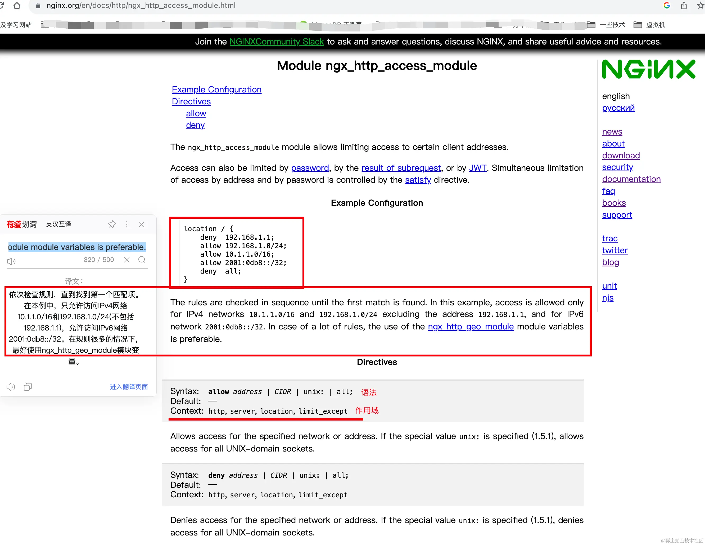
可以看到ip 可以是ipv4 也可以是ipv6 也可以按照网段来配置，当然ip黑白配置可以在 http，server，location和limit_except这几个域都可以区别只是作用粒度大小问题。当然nginx建议我们使用 ngx_http_geo_module这个库，ngx_http_geo_module库支持 按地区、国家进行屏蔽，并且提供了IP库，当需要配置的名单比较多或者根据地区国家屏蔽时这个库可以帮上大忙。
nginx限流
Nginx主要有两种限流方式：按并发连接数限流(ngx_http_limit_conn_module)、按请求速率限流(ngx_http_limit_req_module 使用的令牌桶算法)。
关于 ngx_http_limit_req_module模块，里边有很多种限流指令，官网资料一览：
我们下面使用 ngx_http_limit_req_module 模块中的limit_req_zone和 limit_req 这两个指令来达到限制单个IP的请求速率 的目的。
nginx限流配置解释
在 nginx.conf 中添加限流配置如下：
1
2
3
4
5
6
7
8
9
10
11
12
13
14
| http{
...
# 对请求速率限流
limit_req_zone $binary_remote_addr zone=myRateLimit:10m rate=5r/s;
server{
location /interface{
...
limit_req zone=myRateLimit burst=5 nodelay;
limit_req_status 520;
limit_req_log_level info;
}
}
}
|
- $binary_remote_addr：表示基于 remote_addr(客户端IP) 来做限流
- zone=myRateLimit:10m：表示使用myRateLimit来作为内存区域（存储访问信息）的名字，大小为10M，1M能存储16000 IP地址的访问信息，10M可以存储16W IP地址访问信息
- rate=5r/s：表示相同ip每秒最多请求5次，nginx是精确到毫秒的，也就是说此配置代表每200毫秒处理一个请求，这意味着自上一个请求处理完后，若后续200毫秒内又有请求到达，将拒绝处理该请求（如果没配burst的话）
- burst=5：(英文 爆发 的意思)，意思是设置一个大小为5的缓冲队列，若同时有6个请求到达，Nginx 会处理第一个请求，剩余5个请求将放入队列，然后每隔200ms从队列中获取一个请求进行处理。若请求数大于6，将拒绝处理多余的请求，直接返回503
- nodelay：针对的是 burst 参数，burst=5 nodelay 这个配置表示被放到缓冲队列的这5个请求会立马处理，不再是每隔200ms取一个了。但是值得注意的是，即使这5个突发请求立马处理并结束，后续来了请求也不一定不会立马处理，因为虽然请求被处理了但是请求所占的坑并不会被立即释放，而是只能按 200ms 一个来释放，释放一个后 才将等待的请求 入队一个。
- 另外两个： limit_req_status=520表示当被限流后，nginx的返回码，limit_req_log_level info代表日志级别
注意： 如果不开启nodelay且开启了burst这个配置，那么将会严重影响用户体验（你想想假设burst队列长度为100的话每100ms处理一个,那队列最后那个请求得等10000ms=10s后才能被处理，那不超时才怪呢此时burst已经意义不大了）所以一般情况下 建议burst和nodelay结合使用，从而尽可能达到速率稳定，但突然流量也能正常处理的效果。
nginx限流（针对请求速率）
限制每秒同一ip最多访问5次/1s
修改nginx.conf，把burst=5 nodelay注释掉，如下：
1
2
3
4
5
6
7
8
9
10
11
12
13
14
| http{
...
# 对请求速率限流
limit_req_zone $binary_remote_addr zone=myRateLimit:10m rate=5r/s;
server{
location /interface{
...
limit_req zone=myRateLimit #burst=5 nodelay;
limit_req_status 520;
limit_req_log_level info;
}
}
}
|
上边的配置意味着每秒最多处理5次同样ip的请求
打开burst参数并设置成5。现在我们的速率不变还是最多5次一秒，但是设置burst=5代表缓冲队列的长度为5，nginx每隔200ms，从缓冲队列拿一个进行处理，配置如下：
1
2
3
4
5
6
7
8
9
10
11
12
13
14
| http{
...
# 对请求速率限流
limit_req_zone $binary_remote_addr zone=myRateLimit:10m rate=5r/s;
server{
location /interface{
...
limit_req zone=myRateLimit burst=5 #nodelay;
limit_req_status 520;
limit_req_log_level info;
}
}
}
|
打开nodelay
我们上边说过打开nodlay的话，代表放到burst队列的请求直接处理 ，不再按速率 200ms/次 拿了，配置如下：
1
2
3
4
5
6
7
8
9
10
11
12
13
14
| http{
...
# 对请求速率限流
limit_req_zone $binary_remote_addr zone=myRateLimit:10m rate=5r/s;
server{
location /interface{
...
limit_req zone=myRateLimit burst=5 nodelay;
limit_req_status 520;
limit_req_log_level info;
}
}
}
|
开启nodelay后响应时间10几秒明显比不开启nodelay快很多，但是请求成功的还是6个，因为就像我们上边说的ngdelay虽然会即时处理，但是释放坑位是200ms释放一个 （也就是说即时开启了nodelay 但释放令牌的速度是不变的） ，所以nodelay参数本质上并没有提高访问速率，而仅仅是让处于burst队列的请求 ”被快速处理“ 罢了。
nginx限流（针对连接数量）
针对连接数量的限流和速率不一样，即使你速率是1ms一次，只要你连接数量不超过设置的，那么也访问成功。如果连接数超过设置的值将会请求失败。值得注意的是他是 ngx_http_limit_conn_module模块中的，不要和 速率限流的 ngx_http_limit_req_module模块搞混了。
配置如下：
1
2
3
4
5
6
7
8
9
10
11
| http{
# 针对ip 对请求连接数限流
...
limit_conn_zone $binary_remote_addr zone=myConnLimit:10m;
...
server{
...
limit_conn myConnLimit 12;
}
}
|
limit_conn_zone $binary_remote_addr zone=myConnLimit:10m; 代表的意思 是 基于连接数量限流，限流的对象是ip 名称是myConnLimit 存储空间大小10mb（即存放某ip的访问记录），limit_conn myConnLimit 12;标识该ip最大支持12个连接超过则返回503（被限流后状态码默认是503，当然你也可以修改返回码 像上边的 针对请求速率限流 ，返回码就是 我修改的520）。
if
该指令用于条件判断，并且根据条件判断结果来选择不同的配置，其作用于为：server/location 块。这个指令比较简单，因为编程中if语句都是非常高频使用的。因为我们很多时候，都是在对 比如：url 参数 ip 域名等等做比对或者判断（一般都使用正则的方式）,而这些都在nginx全局变量中可以拿到。
if判断指令语法为
对给定的条件condition进行判断。如果为真，大括号内的rewrite等指令将被执行，if条件(conditon)可以是如下任何内容：
- 一个变量名，如果变量 $variable 的值为空字符串或者字符串”0”，则为false
- 变量与一个字符串的比较 相等为(=) 不相等为(!=) 注意此处不要把相等当做赋值语句啊
- 变量与一个正则表达式的模式匹配 操作符可以是(
~ 区分大小写的正则匹配， ~*不区分大小写的正则匹配， !~ !~*，前面两者的非)
- 检测文件是否存在 使用 -f(存在) 和 !-f(不存在)
- 检测路径是否存在 使用 -d(存在) 和 !-d(不存在) 后面判断可以是字符串也可是变量
- 检测文件、路径、或者链接文件是否存在 使用 -e(存在) 和 !-e(不存在) 后面判断可以是字符串也可是变量
- 检测文件是否为可执行文件 使用 -x(可执行) 和 !-x(不可执行) 后面判断可以是字符串也可是变量
注意 上面 第1，2，3条被判断的必须是 变量， 4, 5, 6, 7则可以是变量也可是字符串
例如
1
2
3
4
5
6
7
8
9
10
11
12
13
14
15
16
17
18
19
20
21
22
23
24
25
26
27
28
29
30
31
32
33
34
35
36
37
38
39
40
41
42
43
44
45
46
47
48
49
50
51
52
53
54
55
56
57
58
59
60
61
62
63
64
65
66
67
68
| set $variable "0";
if ($variable) {
# 不会执行，因为 "0" 为 false
break;
}
# 使用变量与正则表达式匹配 没有问题
if ( $http_host ~ "^star\.igrow\.cn$" ) {
break;
}
# 字符串与正则表达式匹配 报错
if ( "star" ~ "^star\.igrow\.cn$" ) {
break;
}
# 检查文件类的 字符串与变量均可
if ( !-f "/data.log" ) {
break;
}
if ( !-f $filename ) {
break;
}
# 指定 username 参数中只要有字母 就不走nginx缓存
if ($arg_username ~ [a-z]) {
set $cache_name "no cache";
}
#如果UA包含"MSIE"，rewrite请求到/msid/目录下
if ($http_user_agent ~ MSIE) {
rewrite ^(.)$ /msie/$1break;
}
#如果cookie匹配正则，设置变量$id等于正则引用部分
if ($http_cookie ~ "id=([^;]+)(?:;|$)")
{
set$id$1;
}
#如果提交方法为POST，则返回状态405（Method not allowed）。return不能返回301,302
if ($request_method = POST) {
return405;
}
#限速，$slow可以通过 set 指令设置
if ($slow) {
limit_rate 10k;
}
#如果请求的文件名不存在，则反向代理到localhost 。这里的break也是停止rewrite检查
if (!-f $request_filename){
break;
proxy_pass http://127.0.0.1;
}
#如果querystring中包含"post=140"，永久重定向到example.com
if ($args ~ post=140){
rewrite ^ http://example.com/ permanent;
}
#防盗链
location ~* .(gif|jpg|png|swf|flv)$ {
valid_referers none blocked www.jefflei.com www.leizhenfang.com;
if ($invalid_referer) {
return 404;
}
}
|
auto_index
我们配置nginx， 使得访问 hzznb-xzll.xyz/book/ 时,返回 /usr/local/nginx/test/book/目录下的书籍，配置如下：
1
2
3
4
5
6
7
| location /book/ {
root /usr/local/nginx/test;
autoindex on; # 打开 autoindex，，可选参数有 on | off
autoindex_format html; # 以html的方式进行格式化，可选参数有 html | json | xml
autoindex_exact_size on; # 修改为off，会以KB、MB、GB显示文件大小，默认为on以bytes显示出⽂件的确切⼤⼩
autoindex_localtime off; # 显示⽂件时间 GMT格式
}
|
重启nginx并在浏览器输入 hzznb-xzll.xyz/book/ （注意book后边的斜线 / 不能去掉，否则404了，具体原因我们下边马上会说），看下效果：
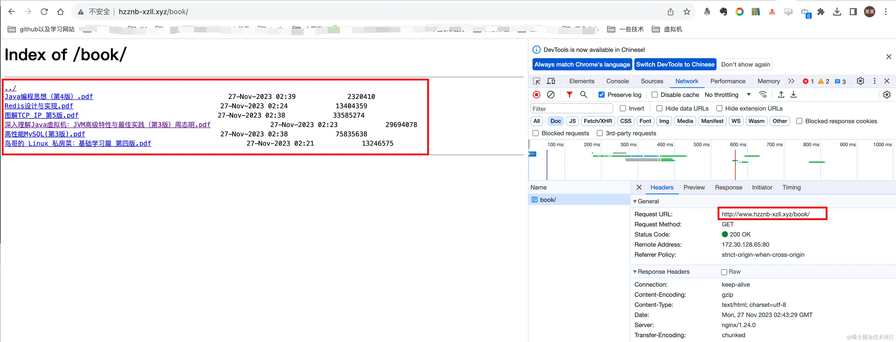
root&alias
root和alias 一般都是用于指定静态资源目录，但是还是有区别的，虽然这是个小知识点但是如果你不清楚规则，很容易走弯路，所以这里阐明并演示这俩的区别。
root
1
2
3
| location /static/ { #注意static后边的斜线 / 不能去掉，否则404了
root /usr/local/nginx/test;
}
|
此时，当你请求 www.hzznb-xzll.xyz/static/imag… 时，/usr/local/nginx/test/static/image2.jpg 文件将被作为响应内容响应给客户端,也就是说 :
root指令会 将 /static/ 拼接到 /usr/local/nginx/test 后边
即完整目录路径为： /usr/local/nginx/test/static/
alias
alias 中文意思别名，这个和root最大区别就是 不会进行拼接，下边我们改下nginx.conf文件来演示下：
1
2
3
| location /static { # 注意一般 alias的 url都不带后边的/
alias /usr/local/nginx/test/; # 使用alias时 这里的目录最后边一定要加/ 否则就404
}
|
上边配置的意思就是当前你访问 www.hzznb-xzll.xyz/static/imag… 时，nginx会去alias配置的路径：/usr/local/nginx/test/目录下找 image2.jpg 这个文件从而返回。比如我现在的/usr/local/nginx/test/目录下没有image2.jpg 文件则返回404。
proxy_pass 中的斜线与root和 alias的相似之处
在我们上边的负载均衡以及动静锋利等等演示中，可以看到我们的proxy_pass的配置基本上都是这么配的：
proxy_pass http://mybackendserver/
这里有个东西和root与alias的规则很像，所以我们在这里也提一下，就是 http://mybackendserver/ 后边这个斜线 /，如果你不写 / 则会将location的url拼接到路径后边，如果你写了则不会。
upstream 中常用的几个指令
| 参数 |
描述 |
| server |
反向服务地址 |
| weight |
权重 |
| fail_timeout |
与max_fails结合使用。 |
| max_fails |
设置在fail_timeout参数设置的时间内最大失败次数，如果在这个时间内，所有针对该服务器的请求都失败了，那么认为该服务器会被认为是停机了。 |
| max_conns |
允许最大连接数 |
| fail_time |
服务器会被认为停机的时间长度,默认为10s |
| backup |
标记该服务器为备用服务器，当主服务器停止时，请求会被发送到它这里。 |
| down |
标记服务器永久停机 |
| slow_start |
当节点恢复，不立即加入 |
重试策略
服务不可用重试
重试是在发生错误时的一种不可缺少的手段，这样当某一个或者某几个服务宕机时（因为我们现在大多都是多实例部署），如果有正常服务，那么将请求 重试到正常服务的机器上去。
下边我们先修改下nginx.conf文件：
1
2
3
4
5
6
7
8
9
| upstream mybackendserver {
# 60秒内 如果请求8081端口这个应用失败
# 3次，则认为该应用宕机 时间到后再有请求进来继续尝试连接宕机应用且仅尝试 1 次，如果还是失败，
# 则继续等待 60 秒...以此循环，直到恢复
server 172.30.128.64:8081 fail_timeout=60s max_fails=3;
server 172.30.128.64:8082;
server 172.30.128.64:8083;
}
|
错误重试
可以配置哪些状态下 才会执行重试，比如如下这个配置：
1
2
| # 指定哪些错误状态才执行 重试 比如下边的 error 超时，500,502,503 504
proxy_next_upstream error timeout http_500 http_502 http_503 http_504;
|
backup
Nginx 支持设置备用节点，当所有线上节点都异常时会启用备用节点，同时备用节点也会影响到失败
重试的逻辑。
我们可以通过 backup 指令来定义备用服务器，backup有如下特征：
- 正常情况下，请求不会转到 backup 服务器，包括失败重试的场景
- 当所有正常节点全部不可用时，backup 服务器生效，开始处理请求
- 一旦有正常节点恢复，就使用已经恢复的正常节点
- backup 服务器生效期间，不会存在所有正常节点一次性恢复的逻辑
- 如果全部 backup 服务器也异常，则会将所有节点一次性恢复，加入存活列表
- 如果全部节点（包括 backup）都异常了，则 Nginx 返回 502 错误
接着我们修改下nginx.conf文件演示下backup的作用：
1
2
3
4
5
| upstream mybackendserver {
server 172.30.128.64:8081 fail_timeout=60s max_fails=3; # 60秒内 如果请求某一个应用失败3次，则认为该应用宕机 时间到后再有请求进来继续尝试连接宕机应用且仅尝试 1 次，如果还是失败，则继续等待 60 秒...以此循环，直到恢复
server 172.30.128.64:8082;
server 172.30.128.64:8083 backup; # 设置8083位备机
}
|
即使8081 不可用也只是去8082重试而不会到备机重试，如果8081 8082都不可用则请求重试到备机：8083。
压缩
压缩功能比较实用尤其是处理一些大文件时，而gzip 是规定的三种标准 HTTP 压缩格式之一。目前绝大多数的网站都在使用 gzip 传输 HTML 、CSS 、 JavaScript 等资源文件。需要知道的是，并不是每个浏览器都支持 gzip 压缩，如何知道客户端（浏览器）是否支持 压缩 呢？ 可以通过观察 某请求头中的 Accept-Encoding 来观察是否支持压缩，另外只有客户端支持也不顶事，服务端得返回gzip格式的文件呀，那么这件事nginx可以帮我们做，我们可以通过 Nginx 的配置来让服务端支持 gzip。服务端返回压缩文件后浏览器进行解压缩从而展示正常内容。
想要压缩就得配置nginx,修改nginx.conf文件
1
2
3
4
5
6
7
8
9
10
11
12
13
14
15
16
17
18
19
20
| http {
# 开启/关闭 压缩机制
gzip on;
# 根据文件类型选择 是否开启压缩机制
gzip_types text/plain application/javascript text/css application/xml text/javascript image/jpeg image/jpg image/gif image/png application/json;
# 设置压缩级别，一共9个级别 1-9 ，越高资源消耗越大 越耗时，但压缩效果越好，
gzip_comp_level 9;
# 设置是否携带Vary:Accept-Encoding 的响应头
gzip_vary on;
# 处理压缩请求的 缓冲区数量和大小
gzip_buffers 32 64k;
# 对于不支持压缩功能的客户端请求 不开启压缩机制
gzip_disable "MSIE [1-6]\."; # 比如低版本的IE浏览器不支持压缩
# 设置压缩功能所支持的HTTP最低版本
gzip_http_version 1.1;
# 设置触发压缩的最小阈值
gzip_min_length 2k;
# off/any/expired/no-cache/no-store/private/no_last_modified/no_etag/auth 根据不同配置对后端服务器的响应结果进行压缩
gzip_proxied any;
}
|
不管是html还是接口响应数据， 压缩后的体积变得非常小了，压缩的效果还是不错的，但是值得注意的是压缩后虽然体积变小了，但是响应的时间会变长，因为压缩/解压也需要时间呀！压缩功能似乎有点：用时间换空间的感觉！，当然压缩级别可以调的，你可以选择较低级别的压缩，这样既能实现压缩功能使得数据包体积降下来，同时压缩时间也会缩短是比较折中的一种方案。
完整nginx.conf文件
1
2
3
4
5
6
7
8
9
10
11
12
13
14
15
16
17
18
19
20
21
22
23
24
25
26
27
28
29
30
31
32
33
34
35
36
37
38
39
40
41
42
43
44
45
46
47
48
49
50
51
52
53
54
55
56
57
58
59
60
61
62
63
64
65
66
67
68
69
70
71
72
73
74
75
76
77
78
79
80
81
82
83
84
85
86
87
88
89
90
91
92
93
94
95
96
97
98
99
100
101
102
103
104
105
106
107
108
109
110
111
112
113
114
115
116
117
118
119
120
121
122
123
124
125
126
127
128
129
130
131
132
133
134
135
136
137
138
139
140
141
142
143
144
145
146
147
148
149
150
151
152
153
154
155
156
157
158
159
160
161
162
163
164
165
166
167
168
169
170
171
172
173
174
175
176
177
178
179
180
181
182
183
184
185
186
187
188
189
190
191
192
193
194
195
196
197
198
199
200
201
202
203
204
205
206
207
208
209
210
211
212
213
214
215
216
217
218
219
220
221
222
223
224
225
226
227
228
229
230
231
232
233
234
235
236
237
238
239
240
241
242
243
244
245
246
247
248
249
250
251
|
user nginx;
worker_processes auto;
error_log /var/log/nginx/error.log notice;
pid /var/run/nginx.pid;
events {
worker_connections 1024;
}
http {
include /etc/nginx/mime.types;
default_type application/octet-stream;
# log_format debug '$remote_addr - $remote_user [$time_local] "$request" '
# '$status $body_bytes_sent "$http_referer" '
# '"$http_user_agent" "$http_x_forwarded_for"';
#
log_format debug ' $remote_user [$time_local] $http_x_Forwarded_for $remote_addr $request '
'$http_x_forwarded_for '
'$upstream_addr '
'ups_resp_time: $upstream_response_time '
'request_time: $request_time';
access_log /var/log/nginx/access.log debug;
sendfile on;
#tcp_nopush on;
keepalive_timeout 65;
upstream mybackendserver {
server 172.30.128.64:8081 fail_timeout=60s max_fails=3; # 60秒内 如果请求某一个应用失败3次，则认为该应用宕机 时间到后再有请求进来继续尝试连接宕机应用且仅尝试 1 次，如果还是失败，则继续等待 60 秒...以此循环，直到恢复
server 172.30.128.64:8082;
server 172.30.128.64:8083 backup; # 设置8083位备机
}
# 开启/关闭 压缩机制
gzip on;
# 根据文件类型选择 是否开启压缩机制
gzip_types text/plain application/javascript text/css application/xml text/javascript image/jpeg image/jpg image/gif image/png application/json;
# 设置压缩级别，越高资源消耗越大越耗时，但压缩效果越好
gzip_comp_level 9;
# 设置是否携带Vary:Accept-Encoding 的响应头
gzip_vary on;
# 处理压缩请求的 缓冲区数量和大小
gzip_buffers 32 64k;
# 对于不支持压缩功能的客户端请求 不开启压缩机制
gzip_disable "MSIE [1-6]\."; # 比如低版本的IE浏览器不支持压缩
# 设置压缩功能所支持的HTTP最低版本
gzip_http_version 1.1;
# 设置触发压缩的最小阈值
gzip_min_length 2k;
# off/any/expired/no-cache/no-store/private/no_last_modified/no_etag/auth 根据不同配置对后端服务器的响应结果进行压缩
gzip_proxied any;
# 指定缓存存放目录为/usr/local/nginx/test/nginx_cache_storage，并设置缓存名称为mycache，大小为64m， 1天未被访问过的缓存将自动清除，磁盘中缓存的最大容量为1gb
proxy_cache_path /usr/local/nginx/test/nginx_cache_storage levels=1:2 keys_zone=mycache:64m inactive=1d max_size=1g;
# 对请求速率限流
#limit_req_zone $binary_remote_addr zone=myRateLimit:10m rate=5r/s;
# 对请求连接数限流
limit_conn_zone $binary_remote_addr zone=myConnLimit:10m;
# --------------------HTTP 演示 配置---------------------
server {
listen 80 default;
charset utf-8;
server_name www.hzznb-xzll.xyz hzznb-xzll.xyz;
#location /static/ {
# root /usr/local/nginx/test; # /usr/local/nginx/test/static/xxx.jpg
#}
location /static { # 注意一般 alias的 url都不带后边的/
alias /usr/local/nginx/test/; # 使用alias时 这里的目录最后边一定要加/ 否则就404
}
# 测试autoindex效果
location /book/ {
root /usr/local/nginx/test;
autoindex on; # 打开 autoindex，，可选参数有 on | off
autoindex_format html; # 以html的方式进行格式化，可选参数有 html | json | xml
autoindex_exact_size on; # 修改为off，会以KB、MB、GB显示文件大小，默认为on以bytes显示出⽂件的确切⼤⼩
autoindex_localtime off; # 显示⽂件时间 GMT格式
}
# 临时重定向
location /temp_redir {
rewrite ^/(.*) https://www.baidu.com redirect;
}
# 永久重定向
location /forever_redir {
rewrite ^/(.*) https://www.baidu.com permanent;
}
# rewrite last规则测试
location /1 {
rewrite /1/(.*) /2/$1 last;
}
location /2 {
rewrite /2/(.*) /3/$1 last;
}
location /3 {
alias '/usr/local/nginx/test/static/';
index location_last_test.html;
}
}
# --------------------HTTP配置---------------------
server {
listen 80;
charset utf-8;
#server_name www.xxxadminsystem.com;
server_name www.hzznbc-xzll.xyz hzznbc-xzll.xyz;
# 重定向，会显示跳转的地址server_name,如果访问的地址没有匹配会默认使用第一个，即www.likeong.icu
return 301 https://$server_name$request_uri;
# # 指定 username 参数中只要有字母 就不走nginx缓存
# if ($arg_username ~ [a-z]) {
# set $cache_name "no cache";
# }
# # 前端页面资源
# location /page {
# alias '/usr/local/nginx/test/static/';
# index index_page.html;
# allow all;
# }
# # 后端服务
# location /interface {
# proxy_pass http://mybackendserver/;
# # 使用名为 mycache 的缓存空间
# proxy_cache mycache;
# # 对于200 206 状态码的数据缓存2分钟
# proxy_cache_valid 200 206 1m;
# # 定义生成缓存键的规则（请求的url+参数作为缓存key）
# proxy_cache_key $host$uri$is_args$args;
# # 资源至少被重复访问2次后再加入缓存
# proxy_cache_min_uses 3;
# # 出现重复请求时，只让其中一个去后端读数据，其他的从缓存中读取
# proxy_cache_lock on;
# # 上面的锁 超时时间为4s，超过4s未获取数据，其他请求直接去后端
# proxy_cache_lock_timeout 4s;
# # 对于请求参数中有字母的 不走nginx缓存
# proxy_no_cache $cache_name; # 判断该变量是否有值，如果有值则不进行缓存，没有值则进行缓存
# # 在响应头中添加一个缓存是否命中的状态（便于调试）
# add_header Cache-status $upstream_cache_status;
# limit_conn myConnLimit 12;
# limit_req zone=myRateLimit burst=5 nodelay;
# limit_req_status 520;
# limit_req_log_level info;
#}
}
# --------------------HTTPS 配置---------------------
server {
#SSL 默认访问端口号为 443
listen 443 ssl;
#填写绑定证书的域名
server_name www.hzznb-xzll.xyz hzznb-xzll.xyz;
#请填写证书文件的相对路径或绝对路径
ssl_certificate /usr/local/nginx/certificate/hzznb-xzll.xyz_bundle.crt;
#请填写私钥文件的相对路径或绝对路径
ssl_certificate_key /usr/local/nginx/certificate/hzznb-xzll.xyz.key;
#停止通信时，加密会话的有效期，在该时间段内不需要重新交换密钥
ssl_session_timeout 5m;
#服务器支持的TLS版本
ssl_protocols TLSv1 TLSv1.1 TLSv1.2 TLSv1.3;
#请按照以下套件配置，配置加密套件，写法遵循 openssl 标准。
ssl_ciphers ECDHE-RSA-AES128-GCM-SHA256:HIGH:!aNULL:!MD5:!RC4:!DHE;
#开启由服务器决定采用的密码套件
ssl_prefer_server_ciphers on;
# 指定 username 参数中只要有字母 就不走nginx缓存
if ($arg_username ~ [a-z]) {
set $cache_name "no cache";
}
# 前端页面资源
location /page {
alias '/usr/local/nginx/test/static/';
index index_page.html;
allow all;
}
# 后端服务
location /interface {
proxy_pass http://mybackendserver/;
# 指定哪些错误状态才执行 重试
proxy_next_upstream error timeout http_500 http_502 http_503 http_504 http_404;
# 使用名为 mycache 的缓存空间
proxy_cache mycache;
# 对于200 206 状态码的数据缓存2分钟
proxy_cache_valid 200 206 1m;
# 定义生成缓存键的规则（请求的url+参数作为缓存key）
proxy_cache_key $host$uri$is_args$args;
# 资源至少被重复访问2次后再加入缓存
proxy_cache_min_uses 3;
# 出现重复请求时，只让其中一个去后端读数据，其他的从缓存中读取
proxy_cache_lock on;
# 上面的锁 超时时间为4s，超过4s未获取数据，其他请求直接去后端
proxy_cache_lock_timeout 4s;
# 对于请求参数中有字母的 不走nginx缓存
proxy_no_cache $cache_name; # 判断该变量是否有值，如果有值则不进行缓存，没有值则进行缓存
# 在响应头中添加一个缓存是否命中的状态（便于调试）
add_header Cache-status $upstream_cache_status;
limit_conn myConnLimit 12;
# limit_req zone=myRateLimit burst=5 nodelay;
# limit_req_status 520;
# limit_req_log_level info;
}
# 后端服务
location /interface2 {
proxy_pass http://mybackendserver;
# 使用名为 mycache 的缓存空间
proxy_cache mycache;
# 对于200 206 状态码的数据缓存2分钟
proxy_cache_valid 200 206 1m;
# 定义生成缓存键的规则（请求的url+参数作为缓存key）
proxy_cache_key $host$uri$is_args$args;
# 资源至少被重复访问2次后再加入缓存
proxy_cache_min_uses 3;
# 出现重复请求时，只让其中一个去后端读数据，其他的从缓存中读取
proxy_cache_lock on;
# 上面的锁 超时时间为4s，超过4s未获取数据，其他请求直接去后端
proxy_cache_lock_timeout 4s;
# 对于请求参数中有字母的 不走nginx缓存
proxy_no_cache $cache_name; # 判断该变量是否有值，如果有值则不进行缓存，没有值则进行缓存
# 在响应头中添加一个缓存是否命中的状态（便于调试）
add_header Cache-status $upstream_cache_status;
limit_conn myConnLimit 12;
# limit_req zone=myRateLimit burst=5 nodelay;
# limit_req_status 520;
# limit_req_log_level info;
}
}
# include /etc/nginx/conf.d/*.conf;
}
|
参考
https://juejin.cn/post/7306041273822527514#heading-67
https://openresty.org/download/agentzh-nginx-tutorials-zhcn.html#00-Foreword02
https://openresty.org/cn/
https://juejin.cn/post/7166923395802595336?searchId=2024052312322984A6B385B1DDE00B11FC#heading-13